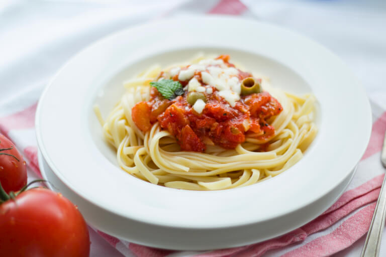

Готовить проще, когда мы вместе
Хорошие рецепты.
Хорошие рецепты.
Простые радости.
Находите любимые блюда, делитесь своими
рецептами и вдохновляйтесь каждый день.

РЕЦЕПТ ДНЯПаста с томатамиВдохновение на каждый день
Все рецепты Что приготовим сегодня?
Истории из кухни
Читать блоги